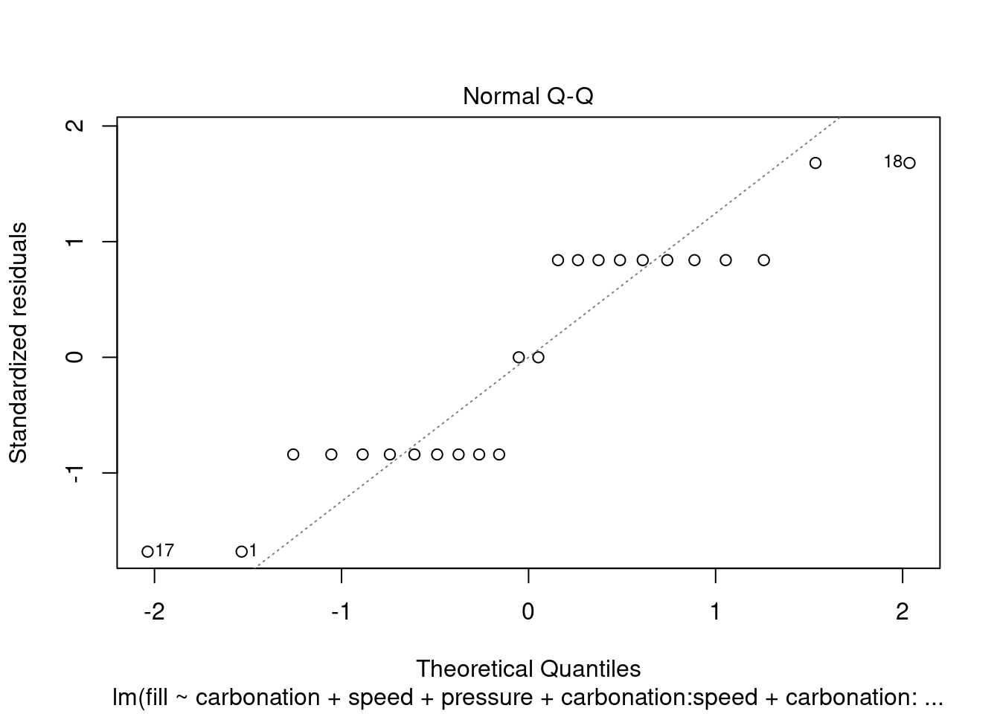

Two factors multiple levels
Battery life example
Load and prepare data for analysis:
battery <- read.csv(sep = ";", header = TRUE, "../industRial/data-raw/5_battery.csv")
battery_narrow <- gather(battery,
temperature,
life,
T15, T70, T125)
battery_narrow_factor <- battery_narrow
battery_narrow_factor$material <- as.factor(battery_narrow$material)
battery_narrow_factor$temperature <- ordered(battery_narrow$temperature,
levels = c("T15", "T70", "T125"))Linear regression with interactions
battery_lm_factor <- lm(life ~ temperature + material + temperature:material,
data = battery_narrow_factor)Note: book example correctly reproduced.
Augmented model check
R², coefficient of determination
summary(battery_lm_factor)$r.squared[1] 0.7652098Note: book example correctly reproduced.
R^2 = 0.7652, That is, about 77 percent of the variability in the battery life is explained by the plate material in the battery, the temperature, and the material type–temperature interaction.
plot(battery_lm_factor$residuals)
Residuals normality check & outliers
Q-Q plot + Shapiro-Wilk test
battery_residuals <- battery_lm_factor[["residuals"]]
qqnorm(battery_residuals, datax = TRUE);qqline(battery_residuals, datax = TRUE)
shapiro.test(battery_residuals)
Shapiro-Wilk normality test
data: battery_residuals
W = 0.97606, p-value = 0.6117library(broom)battery_tidyfit <- augment(battery_lm_factor)p > 0.05 indicates that the residuals do not differ significantly from a normally distributed population.
According to Montgomery the residual of -60.75 (hours) for the temperature value of 15°C maybe an outlier as it’s standardized value is > 2. This can be observed more easily in the battery_tidyfit table created with the augment function from the broom package.
Standardized residuals graph
plot(battery_lm_factor, which = 2)
Plot of residuals versus fitted values
plot(battery_lm_factor, which = 1)
Interaction plot
interaction.plot(x.factor = battery_narrow_factor$temperature,
trace.factor = battery_narrow_factor$material,
response = battery_narrow_factor$life,
trace.label = "Material",
xlab = "temperature [°C]",
ylab = "life [h]")
# And also a scatterplot
ggplot(battery_lm_factor, aes(x = temperature, y = life, color = material)) +
geom_point() +
geom_smooth(method = "lm", se = FALSE) # not clear why the lm line is not plotted, to be investigated
# Just for my curiosity a boxplot for comparison
ggplot(battery_narrow_factor, aes(x = temperature, y = life, color = material)) +
geom_boxplot()
Effects significance
battery_aov <- aov(battery_lm_factor)
summary(battery_aov) Df Sum Sq Mean Sq F value Pr(>F)
temperature 2 39119 19559 28.968 1.91e-07 ***
material 2 10684 5342 7.911 0.00198 **
temperature:material 4 9614 2403 3.560 0.01861 *
Residuals 27 18231 675
---
Signif. codes: 0 '***' 0.001 '**' 0.01 '*' 0.05 '.' 0.1 ' ' 1Sample size calculation
Refer to “Statistiques faciles avec R,” page 233. Cohen’s effect size is calculated with the eta squared from the model (intriguing is the same value as the R²…). In this case with 2 replicates we obtain a power of 90% and an alpha of 1%. I’ve not managed here to replicate the values from the Montgomery book.
library(pwr)battery_cohend_aov <- 40 / 25 # Cohen's effect size = difference of means / sd
pwr.anova.test(k = 3,
n = 4,
f = battery_cohend_aov,
sig.level = 0.05)
Balanced one-way analysis of variance power calculation
k = 3
n = 4
f = 1.6
sig.level = 0.05
power = 0.9892439
NOTE: n is number in each groupI’ve managed to almost reproduce the book result (I obtained a power of 98%, in the book 94%) by calculating the effect size by dividing the life difference of 40 hours by the standard deviation of 25h given in the example and feeding all this in the pwr.anova.test with n = 4 repetitions.
The books “Statistiques faciles avec R” proposes to use the eta but this gives very different results. battery_eta2 <- etaSquared(battery_aov)[1] battery_cohend_aov <- sqrt(battery_eta2 / (1 - battery_eta2))
Removing interaction
# Removing the interaction from the model:
battery_lm_factor_no_int <- lm(life ~ temperature + material,
data = battery_narrow_factor)
battery_aov_no_int <- aov(battery_lm_factor_no_int)
# Comparing Anova results with and without:
summary(battery_aov) Df Sum Sq Mean Sq F value Pr(>F)
temperature 2 39119 19559 28.968 1.91e-07 ***
material 2 10684 5342 7.911 0.00198 **
temperature:material 4 9614 2403 3.560 0.01861 *
Residuals 27 18231 675
---
Signif. codes: 0 '***' 0.001 '**' 0.01 '*' 0.05 '.' 0.1 ' ' 1summary(battery_aov_no_int) Df Sum Sq Mean Sq F value Pr(>F)
temperature 2 39119 19559 21.776 1.24e-06 ***
material 2 10684 5342 5.947 0.00651 **
Residuals 31 27845 898
---
Signif. codes: 0 '***' 0.001 '**' 0.01 '*' 0.05 '.' 0.1 ' ' 1As noted previously, both main effects are significant (p < 0.05).
However, as soon as a residual analysis is performed for these data, it becomes clear that the no-interaction model is inadequate:
# Normality of residuals is worse
battery_residuals_no_int <- battery_aov_no_int[["residuals"]]
qqnorm(battery_residuals_no_int, datax = TRUE);qqline(battery_residuals_no_int, datax = TRUE)
# But it still passes the Shapiro test
shapiro.test(battery_residuals_no_int)
Shapiro-Wilk normality test
data: battery_residuals_no_int
W = 0.97846, p-value = 0.6932# No standardize residual above 2 either:
battery_tidyfit_no_int <- augment(battery_lm_factor_no_int)plot(battery_aov_no_int, which = 2)
# It is finally in the plot residuals vs fit that we can clearly see an issue:
plot(battery_aov, which = 1)
plot(battery_aov_no_int, which = 1)
Any pattern in these quantities is suggestive of the presence of interaction. Figure 5.15 shows a distinct pattern as the quantities move from positive to negative to positive to negative again.